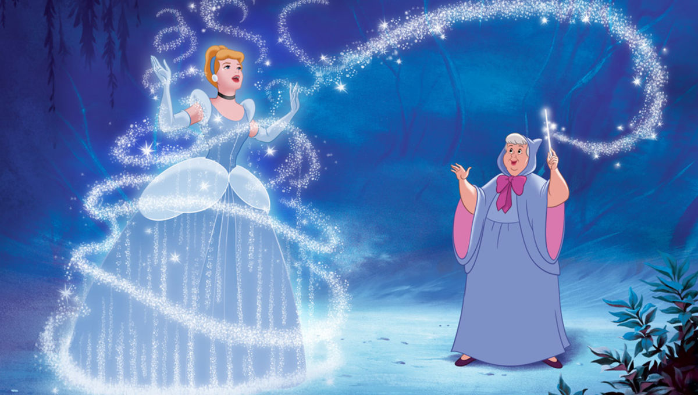

About Cinderella
Cinderella is amazing! She is an extrodonary girl who is taken advantage of on a daily basis by her stepmother and stepsisters. It only takes one person to see her inner beauty and potential in order to encourage her to believe in herself. She is the perfect role model for young girls, as she treated every person with kindness and respect even though she didn't always get the same in return.
Cinderella's Fairy Godmother Transforming her for the Ball!
Cinderella's Characteristics
- Blonde Hair
- Sparkly Smile
- Kind
- Selfless
Cinderella's Friends
Cinderella has many friends, but her very best friends are the animals around her, like Gus and Jaq! Click on the links below to read more about them: